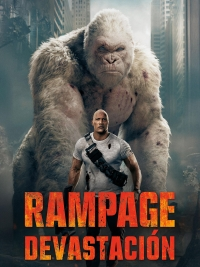
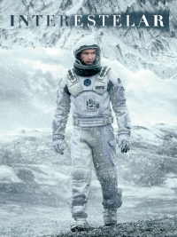
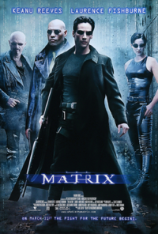

Sobre Mi
Soy estudiante de la Universidad Tecnológica de Panamá en la carrera de Lic. en Ingeniería de Software. Me interesa el desarrollo de software, las bases de datos y la programación en general.
En mi tiempo libre disfruto entrenar en el gimnasio, jugar voleibol y explorar proyectos que combinen creatividad y lógica.
Video de presentación
Mis pasatiempos
- Entrenar en el gimnasio
- Jugar voleibol
- Programar
- Jugar videojuegos
- Escuchar música
Mis cualidades
- Responsable
- Me comprometo con mis metas y proyectos.
- Creativo
- Busco siempre nuevas ideas y soluciones.
- Perseverante
- No me rindo fácilmente ante los retos.
- Colaborador
- Me gusta trabajar en equipo.
- Organizado
- Manejo bien mi tiempo y mis actividades.
Mi Sitio Web Favorito
Visita mi sitio web favorito: Amazon
Mis Libros Favoritos
-
El Psicoanalista
Autor: John Katzenbach
Resumen: el Dr. Frederick Starks, al cumplir 53 años, recibe una carta anónima de un antiguo paciente, el Sr. R (o Rumpelstiltskin), amenazándolo con suicidarse o ver morir a sus seres queridos en 15 días si no lo identifica. Starks debe usar sus habilidades para investigar quién es R, mientras el misterioso acosador destruye metódicamente su vida personal y profesional.
-

Los Juegos del Hambre vol.1
Autor: Suzanne Collins
Resumen: En un futuro cercano, el Capitolio controla a los 12 distritos empobrecidos de Panem. Como castigo por rebeliones pasadas, el Capitolio obliga a cada distrito a enviar un chico y una chica (llamados "Tributos") a luchar a muerte en un evento anual llamado "Los Juegos del Hambre", transmitido a todo el mundo. Katniss se une a los juegos para salvar a su hermana, y debe usar sus habilidades de supervivencia para intentar ganar.
-

Dinero Fácil en un Camino Difícil
Autor: Ricardo PuelloResumen: Describe la contradicción de que, aunque existe la atracción por el dinero fácil (obtener ingresos con poco esfuerzo), la búsqueda de este camino a menudo conduce a dificultades, problemas y consecuencias negativas, incluso la muerte física o espiritual, especialmente cuando se recurre a actividades ilícitas o se vive en un entorno de pobreza y violencia.
-

Di Hola
Autor: German Garmendia
Resumen: Es sobre un escritor pesimista llamado Óscar que, tras la muerte de su novia Natalie, se hunde en la depresión. Natalie le deja un legado de videos para ayudarlo a superar la pérdida y salir de su abismo de pesimismo, lo que lo lleva a descubrir secretos de su propio pasado y a un camino hacia la confianza y la sanación.
-

Dominó
Autor: Ricardo Puello
Resumen: Es una novela cuyo tema principal es el amor narra la historia de una pareja conformada por Dominic y Fabiola, que viven en una sociedad dominada por ola discriminacion y el mal trato que dan a los minusvalidos contra la que deben luchar, una sociedad que ha falta de valores morales emplea la discriminacion como norma.
Mis Películas Favoritas
-

John Wick
Director: Chad Stahelski
- Principal: Keanu Reeves (John Wick).
- Secundarios: Michael Nyqvist (Viggo Tarasov), Alfie Allen (Iosef Tarasov), Willem Dafoe (Marcus), Adrianne Palicki (Ms. Perkins), Ian McShane (Winston).
Protagonistas:
Trailer:
-

Rampage
Director: Chad Stahelski
- Principal: Dwayne Johnson (Davis Okoye).
- Secundarios: Naomie Harris (Dra. Kate Caldwell), Malin Åkerman (Claire Wyden), Jeffrey Dean Morgan (Harvey Russell), Jake Lacy (Brett Wyden), Joe Manganiello (Burke).
Protagonistas:
Trailer:
-

Interestelar
Director: Chad Stahelski
- Principal: Matthew McConaughey (Cooper).
- Secundarios: Anne Hathaway (Amelia Brand), Jessica Chastain (Murph adulta), Mackenzie Foy (Murph niña), Michael Caine (Profesor Brand), Matt Damon (Dr. Mann).
Protagonistas:
Trailer:
-

Matrix
Director: Chad Stahelski
- <
- Principal: Keanu Reeves (Neo / Thomas A. Anderson).
- Secundarios: Laurence Fishburne (Morpheus), Carrie-Anne Moss (Trinity), Hugo Weaving (Agente Smith), Joe Pantoliano (Cypher), Gloria Foster (El Oráculo).
Protagonistas:
Trailer:
-
Madagascar 3
Director: Chad Stahelski
- Principal: Ben Stiller (Alex), Chris Rock (Marty), David Schwimmer (Melman), Jada Pinkett Smith (Gloria).
- Secundarios: Sacha Baron Cohen (Rey Julien), Cedric the Entertainer (Maurice), Andy Richter (Mort), Frances McDormand (Capitana Chantel DuBois), Martin Short (Stefano).
Protagonistas:
Trailer:
-
El Expreso Polar
Director: Chad Stahelski
- Principal: Tom Hanks (varios roles: Conductor, Héroe adulto/narrador, Vagabundo, Santa Claus, etc.).
- Secundarios: Daryl Sabara (Héroe niño - voz/captura), Nona Gaye (Héroe niña), Eddie Deezen (Sabelotodo), Peter Scolari (Héroe niño, adulto joven), Jimmy Bennett (Billy, el niño solitario).
Protagonistas:
Trailer:
Acción
Ciencia Ficción
Animación
Canciones Favoritas
| Canción | Género | Cantante/Grupo | Álbum | Año |
|---|---|---|---|---|
| Blinding Lights | Pop | The Weeknd | After Hours | 2020 |
| Shape of You | Pop | Ed Sheeran | ÷ | 2017 |
| Thriller | Dance Pop | Michael Jackson | Thriller | 1982 |